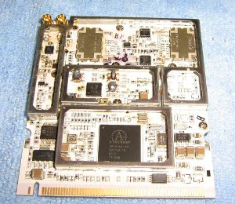

430mhz data transfer
Mesh networks using 2.4 or 5 Ghz wifi are becoming popular, and are very
practical in densely populated areas. But it would be good to have
something more robust for very rural areas.
A way to get around the range limitations of 2.4 Ghz wifi, could be to
convert it directly down to a lower frequency, meaning we no longer have
the near line-of-sight limitation of typical 802.11. A couple of
wireless cards are able to do just this. They the take 2.4GHz system,
remove the 2GHz, leaving 400MHz. On the software side it continues to
function with the 2.4GHz channel system. There is an amateur band just
above 400Mhz - the International Telecommunications Union allocates
430-440MHz for amateurs, and in some countries its wider. However the
use of highbandwith data transmission on this band remains a legal grey
area.  Singapore based Doodle labs produce
the DL435-30 transceiver
board
and Canadian XAGYL Communications produce the
XC420M.
Both are mini PCI cards which operate at 420-450MHz and can work with
linux wifi drivers. The problem is bandwidth; at microwave frequencies
the 10MHz or 20MHz wide channels used by 802.11 wifi is not much, but at
400MHz it is a big chunk of the spectrum and likely to interfere with
other things - many common radio controlled devices (for example garage
doors) operate on 433MHz. Luckily it is possible to configure 802.11 to
squeeze into 5Mhz, of course compromising transmission rate.
The advantage, compared with packet radio or other data transmission
techniques is that the hardware/firmware/software for 802.11 systems is
already widely used and needs only modifying slightly. The computer
'sees' the 430MHz wireless card as a normal 2.4GHz wifi device, with the
usual channels etc.
software
The cards 'appear' to be normal 2.4GHz wifi cards, so not many software
changes are required. The Ubiquiti Routerstation, comes with OpenWRT
Kamikaze. Most of the experiments I have read about use
DD-wrt, which has an easy to use web-based
interface with a build in option to change the channel with to 10 or 5
MHz (necessary on 430MHz). However, DD-WRT is commercial software, not
open source, and the trial version does not allow ssh access to the
router. nbd from the OpenWRT project gave quick instructions on how to
get the routerstation working with the DL435-30 with a 5MHz channel
width, after flashing the firmware from
http://downloads.openwrt.org/snapshots/trunk/ar71xx/
opkg update
# install the right wireless driver
opkg install kmod-ath5k
# re-run wifi device detection
wifi detect > /etc/config/wireless
# edit /etc/config/wireless, enable wifi, set
# 'option chanbw 5'
It is also useful to install the LuCI web
user interface.
antennas
A simple 1/4 wave antenna is around 14cm long (depending on the channel
used). The links below show some other designs.
amplifiers for 70cm
The UK foundation amateur power limit on this band is 10w. Anywhere
other than extremely remote countryside, using these frequencies for
this kind data transfer would probably cause interference with other
amateurs. Even with 5Mhz channels, this is a considerable chunk of the
band. Therefore using amplifiers is perhaps not a great idea. It is also
not clear if this equipment would be damaged by such high power signals.
That said, the links below are to build a considerably more powerful
amplifier. This is clearly not a good idea! But probably a similar
design could be used with lower power mosfets.
other stuff